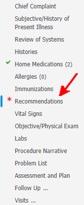
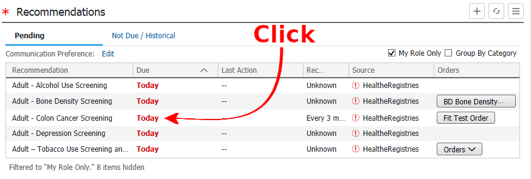
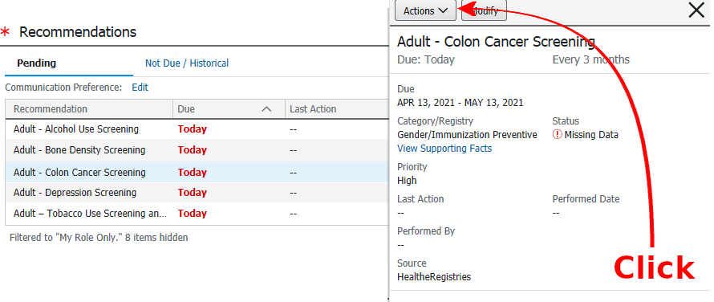
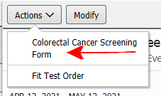
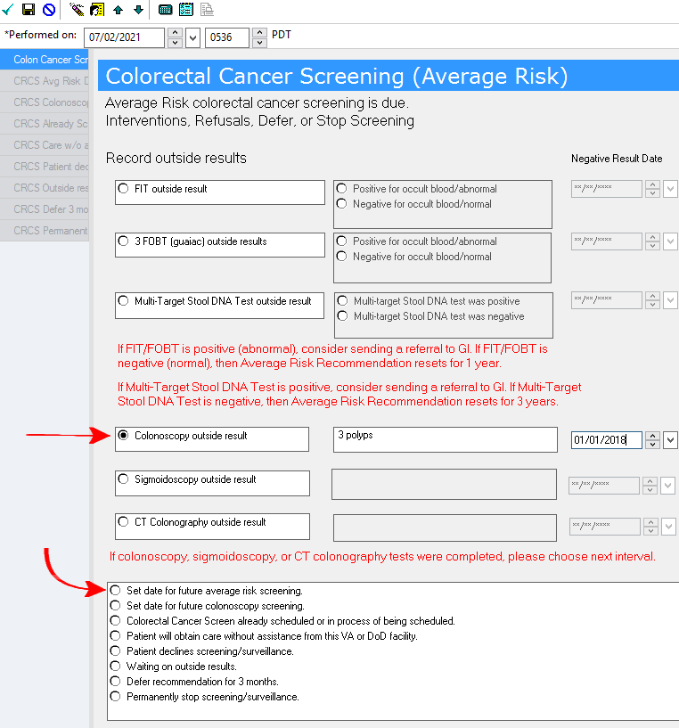
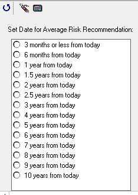
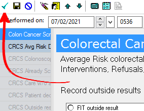

Open the "Primary Care View"

Scroll to the "Recommendations Tab"

Click on the colonoscopy recommendation

Click "Actions"

Click "Colorectal Cancer Screening Form

Click "Colonoscopy outside result", add a comment about the Cscope results, and the date it was performed. Then click the radiobutton to "Set date for future average risk screening"

Select the amount of time before the next colonoscopy should be completed

Save by clicking the checkbox

It can take some time for the system to update, so don't be frustrated if the colonoscopy recommendation does not disappear immediately.